The C*lour of Pomegranates
How can the asterisk be used as a symbol of censorship?
When typing a password into a website, the asterisk is often used to shield or hide what is being inputted. This book is a study of Sergei Parajanov’s The Color of Pomegranates, a Soviet-Armenian film that depicts the life of 18th-century poet and musician Sayat Nova through eight chapters of visual tableaux. Due to heavy suppression by the Soviet Union, many aspects of this film were changed or scrubbed, and the asterisks serve as a visual depiction of that erasure. The use of red string as binding represents a symbol of strength and togetherness that is also seen throughout the film.
However the asterisk is interpreted, this publication utilizes the symbol as a means to dehumanize the human face. This provides a direct correlation to the heavy censorship that affected the film during this time period.

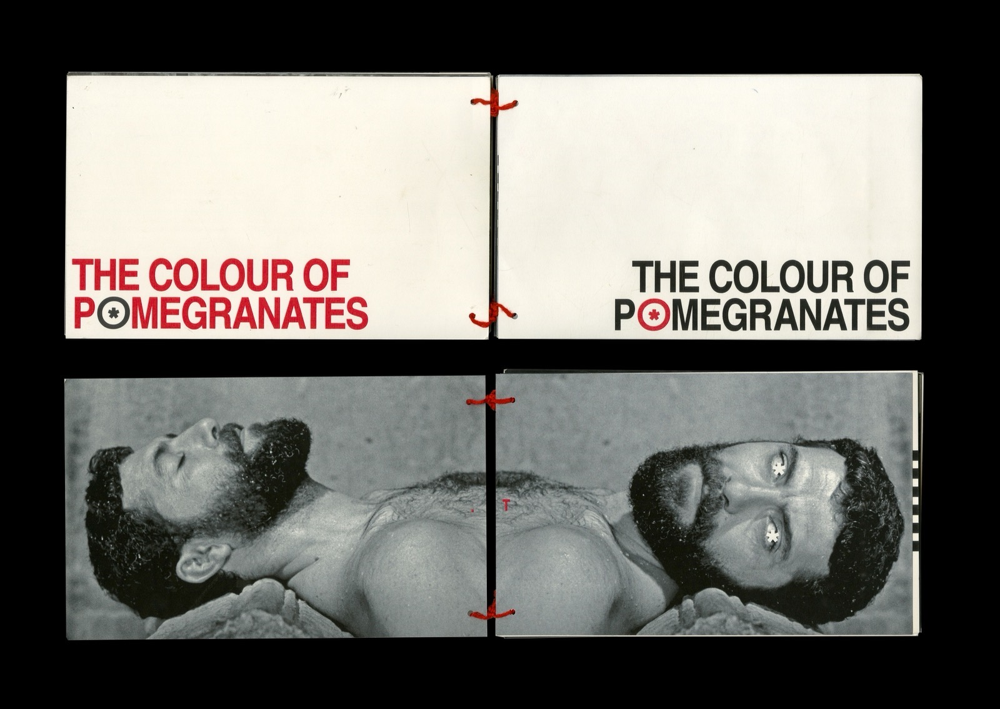
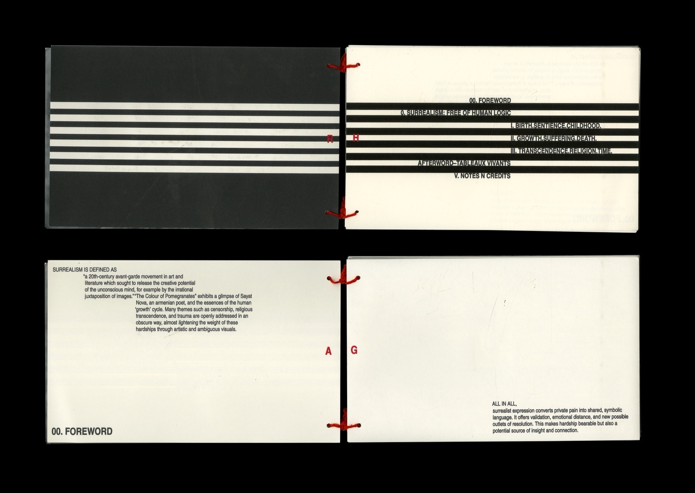
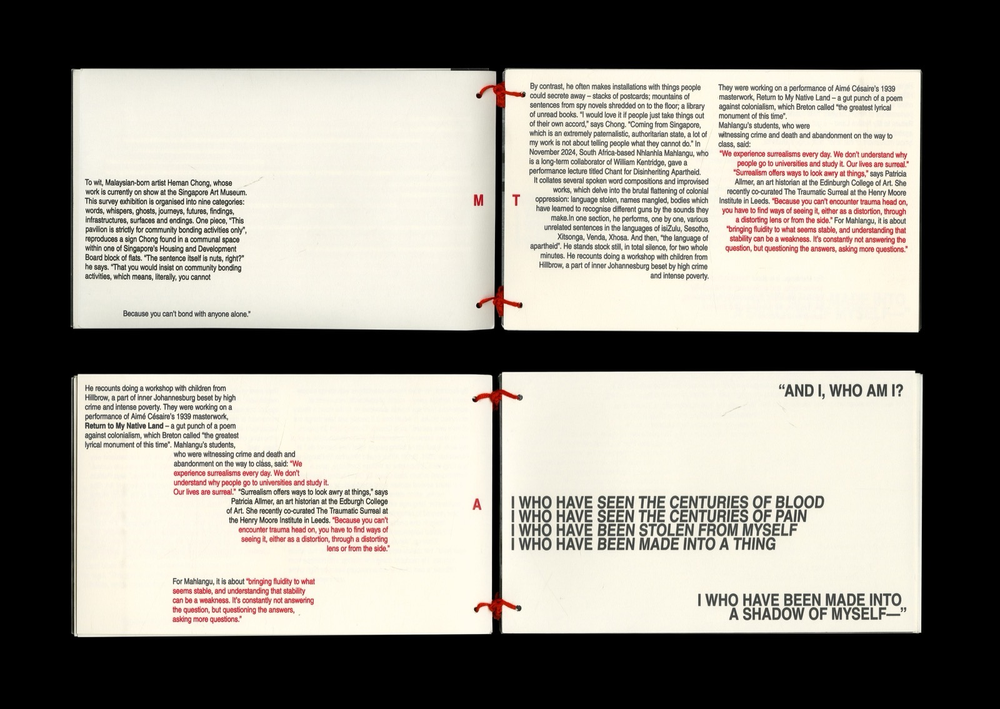
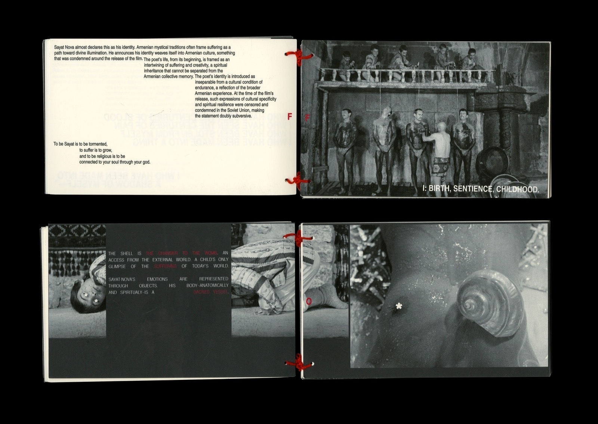
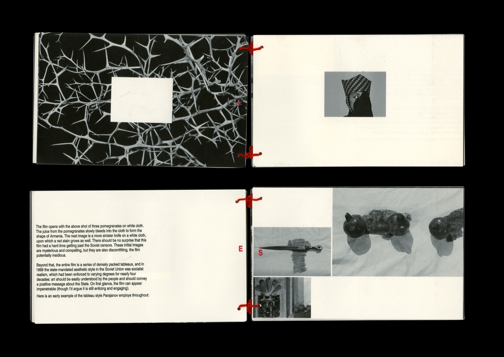
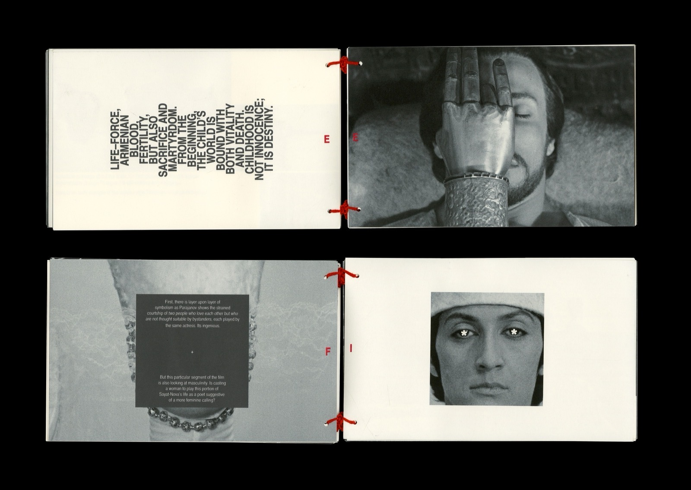
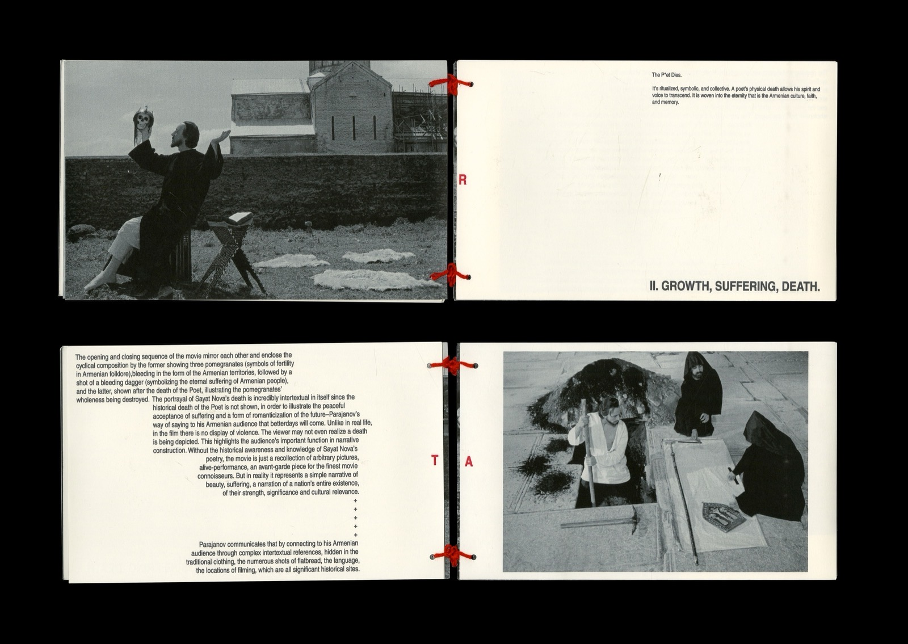
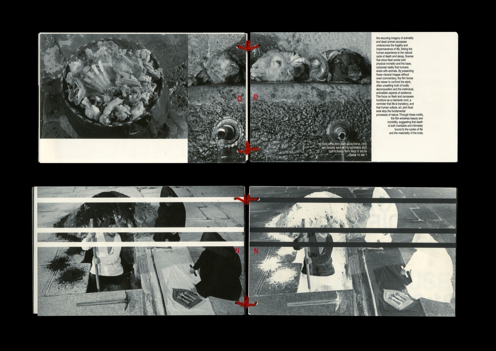
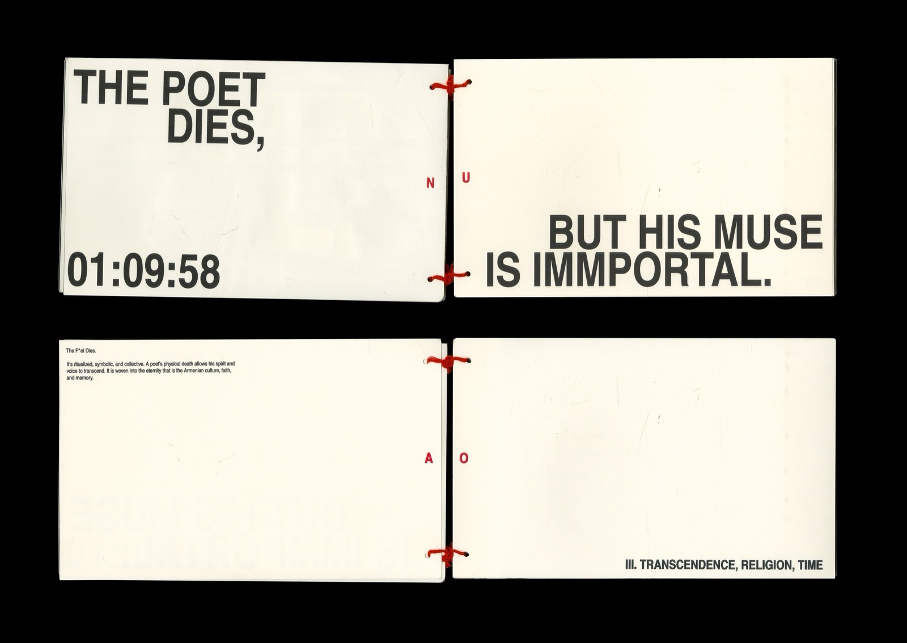
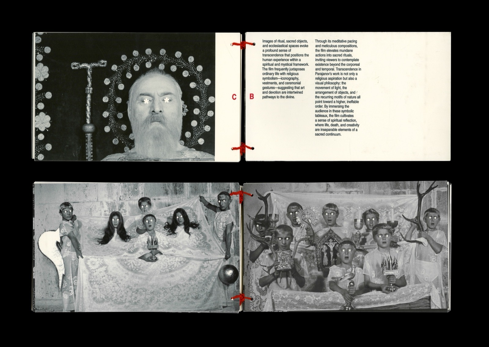
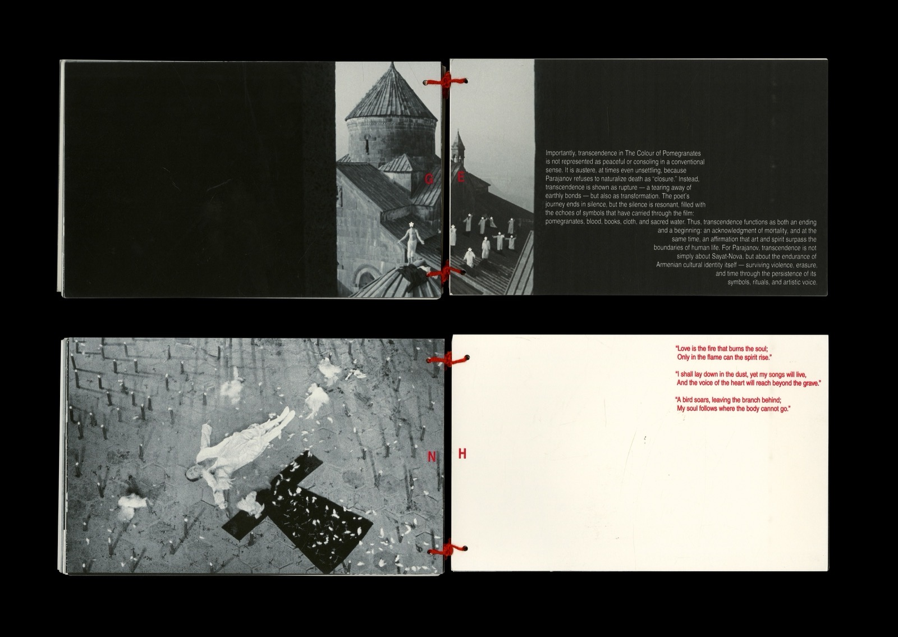
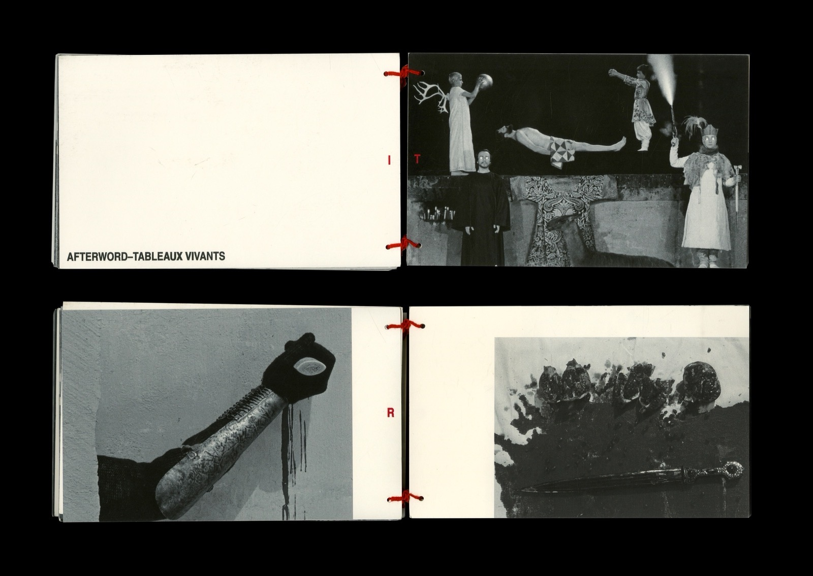
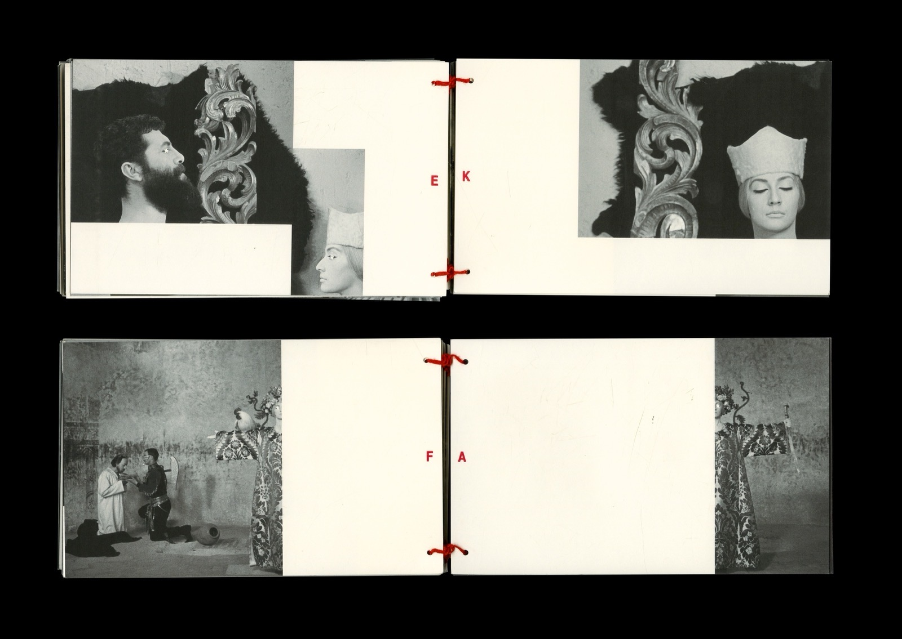
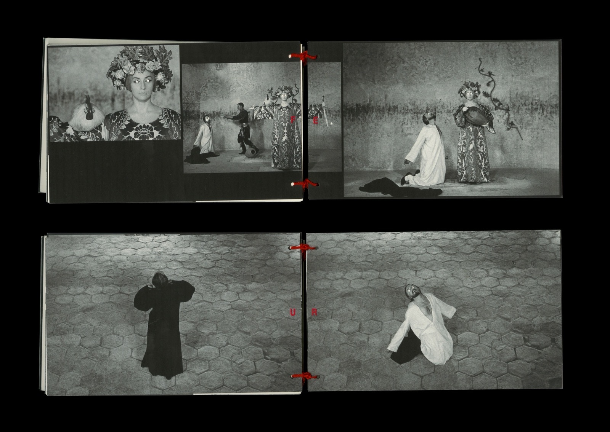
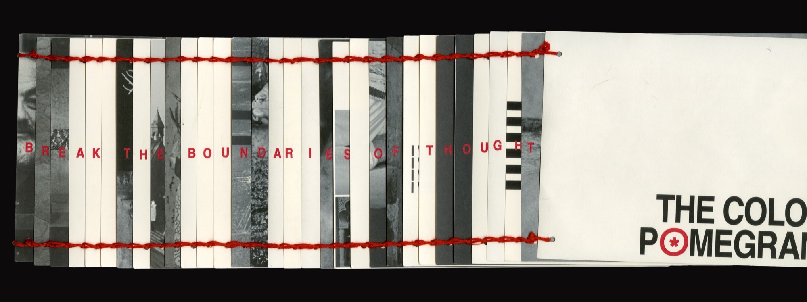